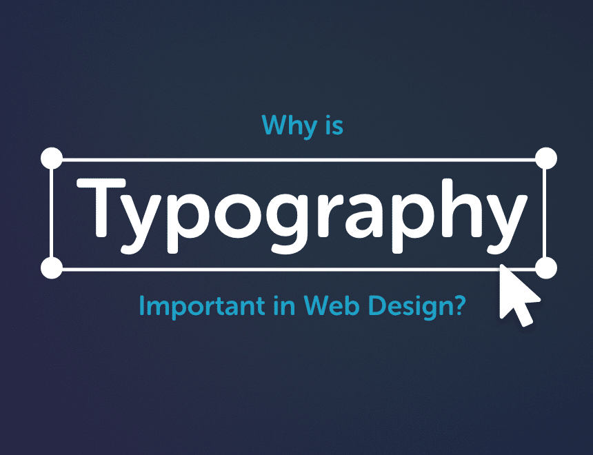

Design
Why is Typography Important in Web Design?

Typography is one of the most critical elements in web design, shaping not only the look and feel of your site but also its effectiveness in communicating your message. It’s more than just choosing a font; it’s about creating an experience that speaks directly to your audience. So, why is typography important in web design? Let’s dive in and also review a few examples to show how simple tweaks in typography and color can make a website connect with entirely different audiences.
How Important is Typography in Design?
Typography is incredibly important in design because it establishes a strong visual foundation and communicates the tone of your brand. Your choice of fonts and colors speaks volumes before visitors read a single word. Imagine designing a website for donuts, but catering to completely different types of customers. Through subtle changes in typography and colors, you can create a totally different experience, even for the same product.
Let’s look at three examples I mocked up to demonstrate this in action.
First up, targeting corporate companies:

When designing for corporate clients, the goal is to look professional and trustworthy. In this case, skip playful or whimsical fonts and stick to something clean and refined. Use professional colors like navy, greys, and whites, which evoke a sense of authority and reliability.
For fonts, sans-serif options like Helvetica or Open Sans are excellent choices due to their modern, no-nonsense style. If you want to elevate the feel, try a serif font like Noto Serif for headings to add sophistication without sacrificing clarity. This approach helps communicate that the company is professional and efficient—exactly what corporate clients want.
Next, eco-friendly and health-conscious:

Now imagine you’re targeting eco-conscious or health-focused customers. The look and feel of your website should align with nature and well-being. Use natural colors like toned-down greens, beiges, and muted hues to give off an organic, fresh vibe.
In terms of typography, serif fonts like Playfair Display work wonderfully for headings because they feel elegant yet grounded. For body text, keep things easy to read with simple sans-serif fonts like Lato or Roboto. This combination creates a balance between a sense of health-consciousness and professionalism, appealing to customers who value sustainability and healthy living.
Now, let’s have some fun with the fun-loving customer:

This audience is all about vibrant energy! The typography and color choices need to convey a sense of fun and creativity. Think bright colors like pinks, teals, and blues, but be careful not to overwhelm—these colors should be reserved for buttons, headings, or images.
Fonts here can be more playful. Rounded fonts like Museo Sans Rounded keep things light while still being readable. The key is to make the design feel approachable, fun, and exciting. By aligning the typography with the audience’s expectations, you create a connection that makes the brand memorable and inviting.
Designing for the Sporty Audience

Last but not least, when targeting the sporty customer, the design should evoke energy, strength, and movement. Bold, dynamic typography paired with strategic color choices will capture the essence of an active lifestyle.
For this audience, stick to darker colors like black, grey, or deep blue for the main background or text. These colors convey a sense of power and determination. However, don’t be afraid to add pops of lime green, yellow, or red to highlight key areas like buttons or call-to-actions. These bright accents can amplify the energy and focus of the design.
In terms of fonts, opt for strong sans-serif fonts like Open Sans Extra Bold or Montserrat. These fonts offer a bold presence that reflects athleticism and movement, giving the design a more intense and powerful look. This font choice pairs well with the sporty theme, helping to create a layout that appeals to fitness enthusiasts, athletes, or anyone with an active lifestyle.
What is the Most Important Aspect of Web Typography?
The most critical aspect of web typography is readability. Regardless of the audience, if your text isn’t easy to read, users will quickly leave your site. This includes choosing appropriate font sizes, line heights, and ensuring the text is legible on both desktop and mobile screens.
Fonts like Roboto and Lato are popular choices for body text because they maintain clarity on digital devices. Headings should use larger, bolder fonts to help guide the user’s eye, while body text should be more understated for easy reading.
How to Use Typography in Web Design?
Here are key ways to effectively use typography in web design:
- Create a visual hierarchy: Use different font sizes and weights to establish a clear flow of information. Headlines, subheadings, and body text should be distinct from one another, helping users navigate content easily.
- Match fonts with your brand’s identity: Choose fonts that reflect the tone of your brand. Whether you’re targeting corporate clients, eco-friendly consumers, or fun-loving audiences, your typography should align with their expectations.
- Limit font choices: Stick to a maximum of two or three fonts to maintain consistency. Too many fonts can make your design feel chaotic and unprofessional.
- Optimize for mobile: Ensure that your typography adjusts for mobile devices, where smaller screens can affect readability. Make sure your fonts are responsive and easy to read across all devices.
How Do Fonts and Typography Impact Web Layout Design?
Typography heavily impacts the overall layout of a website, helping establish a structure that is both visually appealing and functional.
- Visual hierarchy: Typography creates a sense of order by distinguishing between headings, subheadings, and body text. Larger, bolder fonts draw attention to key areas of your site, guiding users through the content in a logical way.
- Content flow: A well-designed typographic hierarchy ensures that users can follow the content naturally. Fonts that are too decorative or too similar in size can confuse the user and disrupt the flow of information.
- Consistency: Using typography consistently across your website helps create a unified design. This builds trust and enhances the user experience, ensuring visitors can easily engage with your content.
Typography: More Than Just Aesthetics in Web Design
Typography in web design goes beyond aesthetics—it’s about creating a seamless experience that reflects your brand’s personality and engages your audience. Whether targeting corporate clients, eco-friendly consumers, or fun-loving individuals, your typography choices play a key role in shaping how your message is perceived.
If you found this post helpful! And which design style do you resonate with the most? Mine’s still the protein donuts—there’s nothing quite like bold fonts paired with pops of color to create energy and excitement!